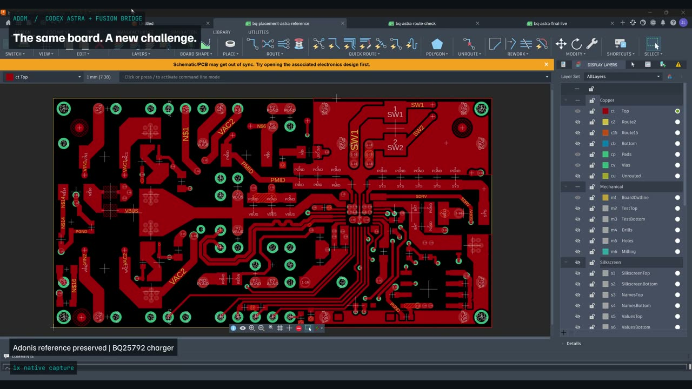
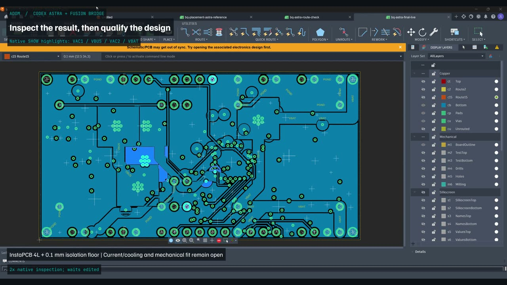
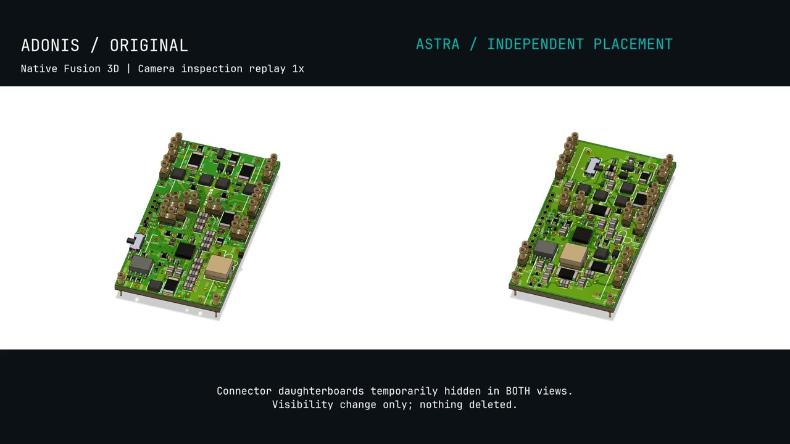

最近在嘗試用 Agent 協助 EE 確認線路圖，我也很好奇：那 PCB layout 呢？
剛好看到 Adom 的示範。他們把原本的走線清掉、元件移到板外，讓 Astra 重新擺放元件，再完成四層板佈線。看到這裡，我第一個想法是：以後是不是可以先讓 Agent 做一版，工程師再拿來討論、修改？

先分清楚：畫面很快，不代表設計只花幾分鐘
這段影片是在 Autodesk Fusion 裡呈現結果。依作者說明，規劃與計算先完成，再透過 Adom Hydrogen 與 Fusion Bridge 把動作帶進編輯器；部分操作加速，也刪除了等待時間。
所以我不會把它理解成「任何板子，幾分鐘就能完成」。它讓我看到的，是 Agent 已經能提出一個可以打開、檢查和比較的 layout 候選方案。這和只用文字建議元件怎麼擺，差了很大一段。
DRC 通過之後，才有更多問題值得問
作者回報修正後 DRC 通過，但 routing vias 從原版的 88 個變成 157 個。這不代表一定比較差，卻很值得問：為什麼這樣走？對電流路徑、散熱和 EMC 有什麼影響？

如果這是我需要 review 的板子，我會先把工作條件補齊，再決定檢查順序：
- 電流路徑：負載是多少？關鍵迴路怎麼走？線寬、銅厚與過孔配置是否符合需求？
- 散熱：熱源擺在哪裡？銅箔、導熱路徑與實際機構的散熱條件是否配合？
- EMC 與回流：高速或切換訊號的回流是否連續？敏感電路與雜訊源之間的安排是否合理？
- 製造與機構：板廠條件、裝配空間、接頭配合與實際公差，是否都已確認？
這些是我會提出的 review 問題，不是已經在這塊板上發現的缺陷。我沒有獨立重跑作者的 DRC，也沒有做過這塊板的實測。
多一個方案，比急著宣布取代誰更實際

對我來說，這個示範最值得試的地方，是讓工程師多一個可以比較的方案。原本大家可能只圍著同一版討論，現在可以問：如果這顆元件移過來，路徑會不會更短？如果換一種擺法，會犧牲哪些條件？
前提是設計要求要說清楚，原始版本要保留，結果要能追溯。Agent 提出方案之後，還是需要有人解釋取捨，並透過驗證確認它是否適合實際產品。
如果 Agent 幫你做完第一版 layout，你會先檢查哪裡？還是你覺得，連第一版都不適合交給它？
From Schematic Review to PCB Layout
I've been exploring agents for schematic review. So I wondered: what about PCB layout?
In an Adom demo, Astra started with the traces removed and components off the board, then created a new placement and four-layer routing. My first thought: could an agent give engineers a first version to review and improve?
A Fast Video Is Not a Complete Design Schedule
The demo uses Autodesk Fusion. According to the author, planning and calculation happened before the editor replay, with some actions accelerated and waiting removed. It should not be read as proof that any board can be designed in a few minutes.
What interests me is the concrete result: a candidate layout that can be opened, inspected, and compared. That goes beyond an agent giving placement advice in a chat.
What I Would Review
The author reported a clean DRC after repairs, but routing vias increased from 88 to 157. That is not automatically worse. It creates questions about the choices behind the layout.
I would first confirm the operating conditions, then review current paths, heat, return paths and EMC, followed by manufacturing and mechanical constraints. These are review questions, not defects I have established in this board. I have not independently rerun its DRC or tested the hardware.
Another Candidate Is Useful
Instead of debating whether AI has replaced the layout engineer, I would start with a smaller experiment: let it propose an alternative under clear constraints, preserve the original, and compare the results.
Could moving a component shorten an important path? What changes would create a thermal or assembly problem? The useful discussion is about these trade-offs. An agent can offer a candidate; a reliable product still needs traceable engineering decisions and validation.
What would you check first? Or would you keep even the first layout in human hands?
來源與畫面 / Source and frames: Adom，頁面貢獻者 John Lauer。截圖取自公開示範，供本文工程評論；非 Michael 本人實作。數據為作者回報。觀看原始影片與方法說明 / Original video and methods。